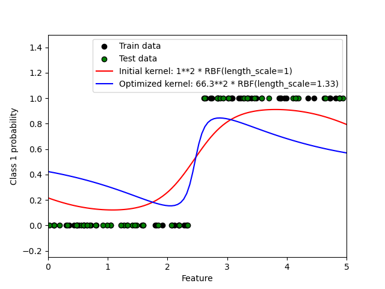
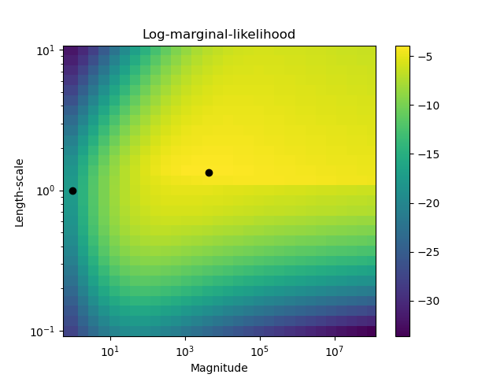

Note
Click here to download the full example code or to run this example in your browser via Binder
Probabilistic predictions with Gaussian process classification (GPC)¶
This example illustrates the predicted probability of GPC for an RBF kernel with different choices of the hyperparameters. The first figure shows the predicted probability of GPC with arbitrarily chosen hyperparameters and with the hyperparameters corresponding to the maximum log-marginal-likelihood (LML).
While the hyperparameters chosen by optimizing LML have a considerable larger LML, they perform slightly worse according to the log-loss on test data. The figure shows that this is because they exhibit a steep change of the class probabilities at the class boundaries (which is good) but have predicted probabilities close to 0.5 far away from the class boundaries (which is bad) This undesirable effect is caused by the Laplace approximation used internally by GPC.
The second figure shows the log-marginal-likelihood for different choices of the kernel’s hyperparameters, highlighting the two choices of the hyperparameters used in the first figure by black dots.
- 
- 
Log Marginal Likelihood (initial): -17.598
Log Marginal Likelihood (optimized): -3.875
Accuracy: 1.000 (initial) 1.000 (optimized)
Log-loss: 0.214 (initial) 0.319 (optimized)
# Authors: Jan Hendrik Metzen <jhm@informatik.uni-bremen.de>
#
# License: BSD 3 clause
import numpy as np
from matplotlib import pyplot as plt
from sklearn.metrics import accuracy_score, log_loss
from sklearn.gaussian_process import GaussianProcessClassifier
from sklearn.gaussian_process.kernels import RBF
# Generate data
train_size = 50
rng = np.random.RandomState(0)
X = rng.uniform(0, 5, 100)[:, np.newaxis]
y = np.array(X[:, 0] > 2.5, dtype=int)
# Specify Gaussian Processes with fixed and optimized hyperparameters
gp_fix = GaussianProcessClassifier(kernel=1.0 * RBF(length_scale=1.0), optimizer=None)
gp_fix.fit(X[:train_size], y[:train_size])
gp_opt = GaussianProcessClassifier(kernel=1.0 * RBF(length_scale=1.0))
gp_opt.fit(X[:train_size], y[:train_size])
print(
"Log Marginal Likelihood (initial): %.3f"
% gp_fix.log_marginal_likelihood(gp_fix.kernel_.theta)
)
print(
"Log Marginal Likelihood (optimized): %.3f"
% gp_opt.log_marginal_likelihood(gp_opt.kernel_.theta)
)
print(
"Accuracy: %.3f (initial) %.3f (optimized)"
% (
accuracy_score(y[:train_size], gp_fix.predict(X[:train_size])),
accuracy_score(y[:train_size], gp_opt.predict(X[:train_size])),
)
)
print(
"Log-loss: %.3f (initial) %.3f (optimized)"
% (
log_loss(y[:train_size], gp_fix.predict_proba(X[:train_size])[:, 1]),
log_loss(y[:train_size], gp_opt.predict_proba(X[:train_size])[:, 1]),
)
)
# Plot posteriors
plt.figure()
plt.scatter(
X[:train_size, 0], y[:train_size], c="k", label="Train data", edgecolors=(0, 0, 0)
)
plt.scatter(
X[train_size:, 0], y[train_size:], c="g", label="Test data", edgecolors=(0, 0, 0)
)
X_ = np.linspace(0, 5, 100)
plt.plot(
X_,
gp_fix.predict_proba(X_[:, np.newaxis])[:, 1],
"r",
label="Initial kernel: %s" % gp_fix.kernel_,
)
plt.plot(
X_,
gp_opt.predict_proba(X_[:, np.newaxis])[:, 1],
"b",
label="Optimized kernel: %s" % gp_opt.kernel_,
)
plt.xlabel("Feature")
plt.ylabel("Class 1 probability")
plt.xlim(0, 5)
plt.ylim(-0.25, 1.5)
plt.legend(loc="best")
# Plot LML landscape
plt.figure()
theta0 = np.logspace(0, 8, 30)
theta1 = np.logspace(-1, 1, 29)
Theta0, Theta1 = np.meshgrid(theta0, theta1)
LML = [
[
gp_opt.log_marginal_likelihood(np.log([Theta0[i, j], Theta1[i, j]]))
for i in range(Theta0.shape[0])
]
for j in range(Theta0.shape[1])
]
LML = np.array(LML).T
plt.plot(
np.exp(gp_fix.kernel_.theta)[0], np.exp(gp_fix.kernel_.theta)[1], "ko", zorder=10
)
plt.plot(
np.exp(gp_opt.kernel_.theta)[0], np.exp(gp_opt.kernel_.theta)[1], "ko", zorder=10
)
plt.pcolor(Theta0, Theta1, LML)
plt.xscale("log")
plt.yscale("log")
plt.colorbar()
plt.xlabel("Magnitude")
plt.ylabel("Length-scale")
plt.title("Log-marginal-likelihood")
plt.show()
Total running time of the script: ( 0 minutes 2.107 seconds)